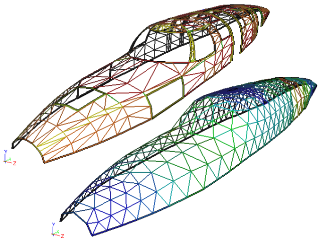

Faceted Modeling
A vast army of 3D artists, initially led by movie and game animators, but more recently joined by students and hobbyists, have compiled an extensive archive of 3D faceted models. These models cover every imaginable item from the mundane, such as eating utensils, to the realms of pure fantasy, such as the Starship Enterprise from Star Trek.
 1957 Chevy Model
1957 Chevy Model
Facets Versus NURBS
Faceted models consist of groups of polygons (often triangles). In contrast, most Computer-Aided Engineering (CAE) models originate from Computer-Aided Design (CAD) systems which typically use continuous surface and edge definitions based on NURBS. CAE simulations then break down this NURBS representation into facets by a process known as meshing. The mesh (or grid) is then used as the basis to perform simulations such as Computational Fluid Dynamics (CFD).
The advantage of retaining the NURBS definition is that different levels of model detail can be produced without losing fidelity as the facets are always guaranteed to conform to the original definition. When facets alone are the geometry definition, producing different levels of detail causes aliasing problems whereby subsequent facets no longer conform to the original continuous, smooth definition. Instead, artifacts of the facets will be manifest in subsequent models as sharp abrupt changes, especially in regions of high curvature such as the leading edge of an airfoil. No amount of mesh refinement can recover the original smooth curvature.
What faceted models lack in quality compared to NURBS, they make up for in the sheer quantity and diversity of examples available. These faceted models are particularly appealing to engineering marketing where a simulation, such as air flow over a car, can be incorporated into a marketing brochure. Such simulations are less concerned with exact physical reality and tend to focus on creating eye-catching visuals.
Formats
Popular formats for faceted models are:
- .3ds – Autodesk's 3ds Max export format
- .dxf – Autodesk's AutoCAD export format
- .obj – originally Alias/Wavefront export format, but now a common exchange format between most 3D animation packages
- .stl – used by stereolithography machines or 3D printers to produce physical models
Topology Recovery
Most of the faceted formats, except for stl, provide groupings of facets that reflect material properties such as glass and metal. However, these groupings are typically inadequate for a CAE simulation which requires surface topology to be grouped according to contiguous regions bounded by edges.
Faceted Fuselage: Original faceted fuselage on the left and a simplified topology with analysis mesh on the right
By processing the facets it is possible to recover the contiguous topology and thus proceed with a CAE simulation as if the facets are the same as native CAD geometry. However, one further enhancement is usually necessary to make the recovered topology better suited for simulation, and that is the joining or merging of adjacent surfaces and edges. These localized joining operations suppress irrelevant small features that would otherwise require a disproportionate amount of computational resources to model compared to their importance in the overall simulation.
Give it a Go
So if your modeling requirements are driven by a need for stunning visuals, maybe for a personalized greeting card, why not give faceted models a try? I guarantee that there are faceted models out there that will satisfy your needs.
Feedback
Questions? Ideas? Problems?

Recent blog posts
- CFD Simulates Distant Past
- Background on the Caedium v6.0 Release
- Long-Necked Dinosaurs Succumb To CFD
- CFD Provides Insight Into Mystery Fossils
- Wind Turbine Design According to Insects
- Runners Discover Drafting
- Wind Tunnel and CFD Reveal Best Cycling Tuck
- Active Aerodynamics on the Lamborghini Huracán Performante
- Fluidic Logic
- Stonehenge Vortex Revealed as April Fools' Day Distortion Field
 Get our Blog feed
Get our Blog feed
Comments
Really Give it a Go
The latest version of Caedium, combined with its Professional add-on, now has the ability to read faceted files, such as stl and obj. It can also join adjacent faces and edges to suppress irrelevant geometry features. So now you really can Give it a Go.
Meshing with Caedium
Hi,
I just downloaded Caedium with a 30-day evaluation of the Professional add-on. Can you recommend any resources to help me learn how Caedium might be used to create meshes? The first problem I'd like to solve is to re-mesh a terrain surface that consists of 64 square chunks (an 8x8 grid of meshes). I've imported my model as .objs. I've displayed the geometry using colormaps. I have not figured out how to display/edit the edge topology while keeping all the pieces connected.
Thanks!!
j.
Meshing Faceted Geometry
Our Caedium Professional add-on should be able to help you.
First I suggest reviewing (if you haven't already) our View a Mesh tip.
This should allow you to create meshes on geometry (native or faceted) without having to perform a full airflow simulation.
As you suggest, you'll next need to control the mesh sizing. Though we don't currently have curvature based mesh sizing, we do provide geometry based mesh sizing using our Physics->Accuracy tool. This allows sizing to be defined on edges, faces and volumes. The sizing is determined by low, medium, high and custom options. The custom option allows explicit specification of the number of intervals on an edge and face (number of intervals on smallest edge), and the element growth rate. The Accuracy tool is used in the Fluid Flow Around a Sphere tutorial in the Specify the Accuracy You Require for Your Results section.
To assemble (or join) geometry it will need to be connected (geometrically, i.e. share common vertices and edges). We currently can only join native geometry using the Geometry->Volumes->Stitch tool. Use the Geometry->Faces->Join and the Geometry->Edges->Join tools to join geometry into composites.
While joining geometry you need to keep in mind that high curvature regions will need a geometry edge for the mesh tools to follow the underlying geometry - so if ther's a high curvature region in the middle of a face without any geometry edges nearby there's a chance the mesh tool will fail, especially if the geometry wraps (folds) around on itself.
It might be worthwhile trying out the Accuracy tool on native geometry to get an idea of how the mesh sizing performs prior to tackling the wavefront files.
I hope this proves useful.
Use STL to Merge Nodes
Just had a thought to get around the fact that we can't yet stitch faceted geometry together.
You could read in the wavefront files (.obj), then export the model as an stl file. Then read the new stl file, which will merge the duplicate nodes along edges to produce a single surface. The draw back is that there will be only one outer edge to the surface.
Caedium v3 can now stitch faceted models
The latest version of Caedium v3, can stitch faceted geometry together. For more details see "Topology Operations".